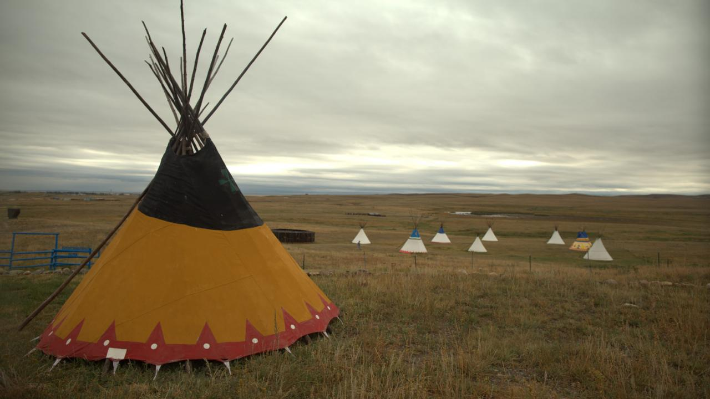
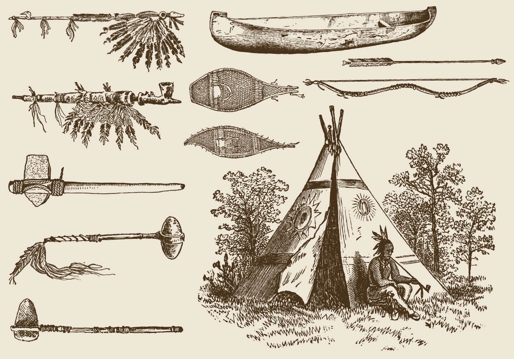

CULTURA
Em suas atividades de caça, pesca, coleta e preparo de alimentos os indígenas das Américas obedeciam as regras ditadas pelas crenças e por tabus.
A língua, a forma de organização social e política, os rituais, os mitos, as formas de expressão artística, as habitações e a maneira de se relacionar com o meio ambiente são exemplos de fatores que se diferenciam.
